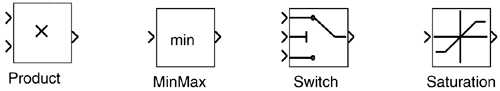
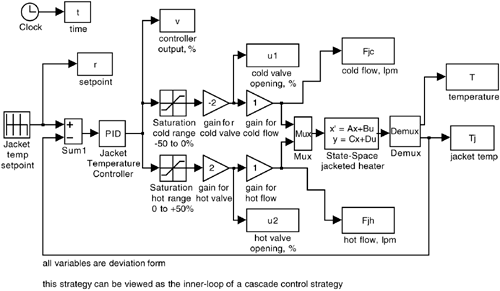

| [ Team LiB ] |
|
12.5 Simulink FunctionsSIMULINK has a number of built-in functions to perform ratio, selective, and split-range control. Examples are shown here.
 An example SIMULINK block diagram to implement a split-range jacket temperature controller from Example 12.1 is shown in Figure 12-7. Since this has been formulated in deviation variable form, the output of the jacket temperature controller ranges from –50 to 50%. Saturation elements are used for the cold and hot valve positions. Figure 12-7. SIMULINK implementation of a split-range strategy for a jacket temperature controller. |
| [ Team LiB ] |
|